Eksplorasi kekayaan warisan budaya Papua — dari rumah adat, pakaian tradisional, tarian sakral, hari besar, alat musik hingga pesona wisata alam yang memukau.
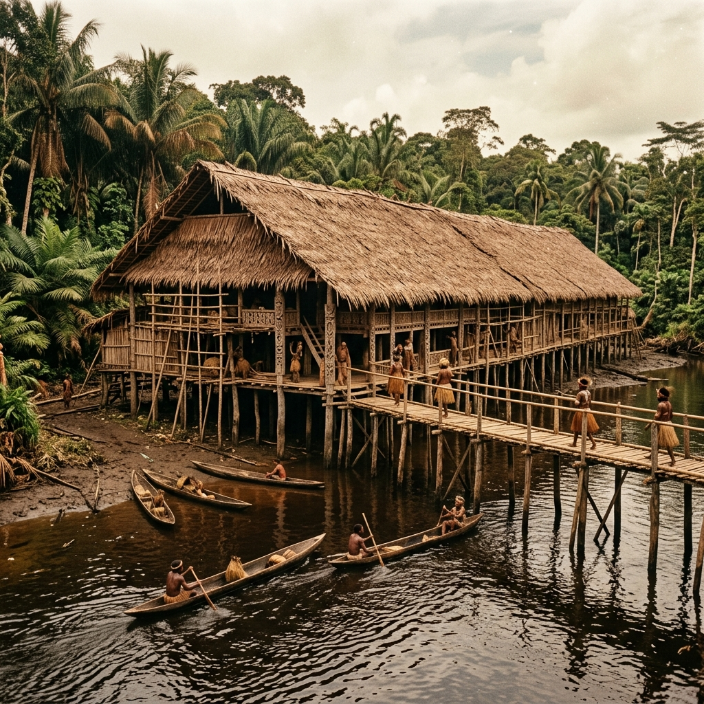
Rumah bujang khas Suku Asmat, tempat berkumpul pria belum menikah dan pelaksanaan upacara ukir sakral.
Baca Selengkapnya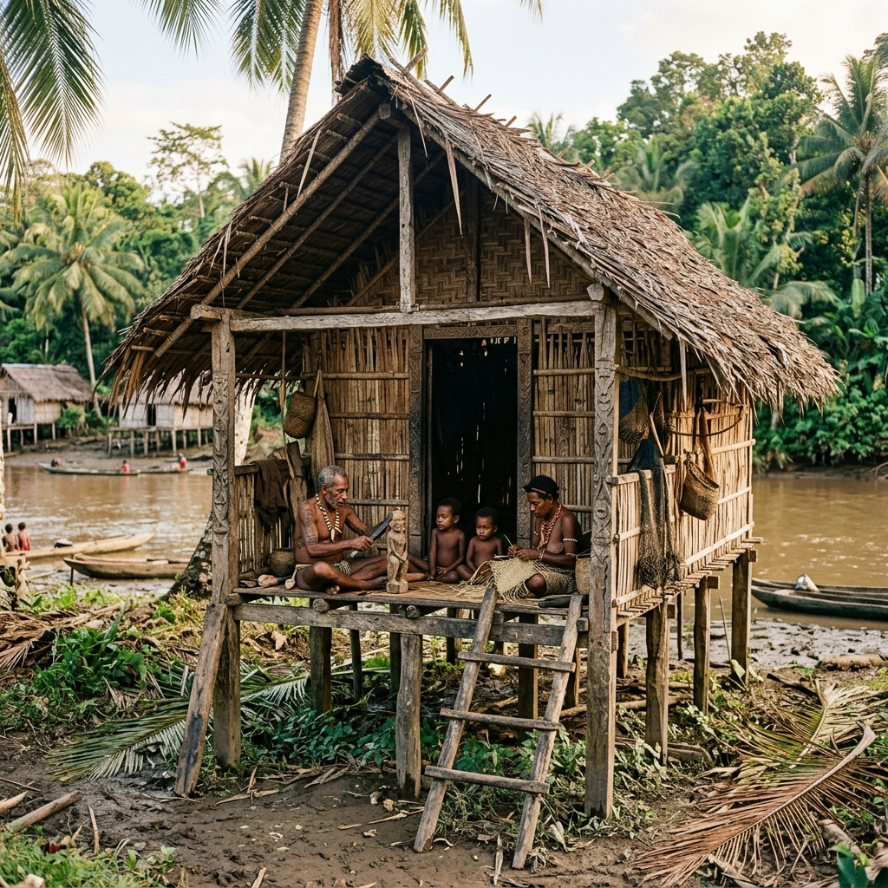
Tempat tinggal keluarga Suku Asmat, dibangun di sekitar Rumah Jew dan dihuni hingga 3 kepala keluarga.
Baca Selengkapnya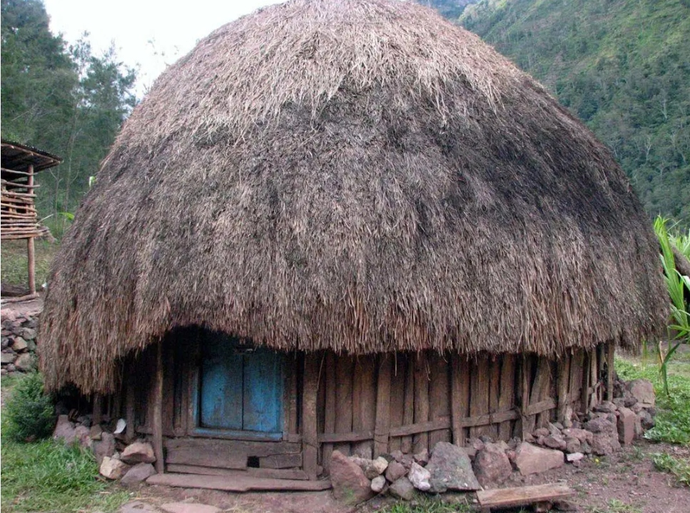
Rumah adat Suku Dani berbentuk bundar dengan atap jerami tebal, dirancang untuk melindungi dari dinginnya pegunungan.
Baca Selengkapnya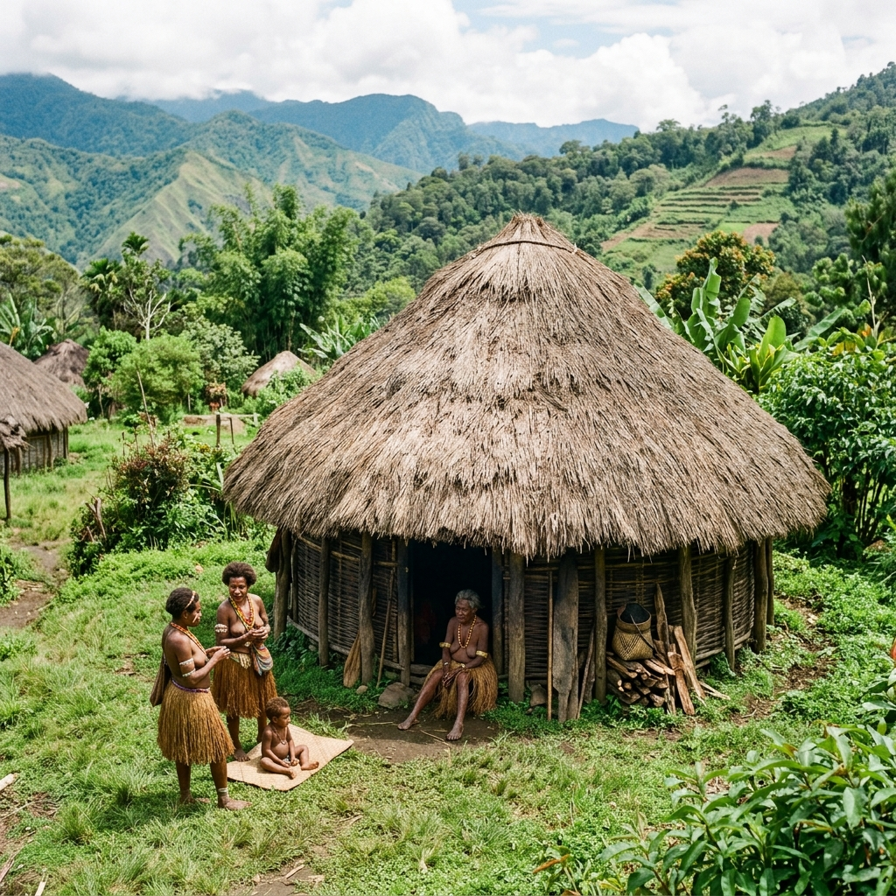
Rumah perempuan Suku Dani, lebih kecil dari Honai dengan atap lebih landai, dibangun di posisi terlindungi di belakang Honai.
Baca Selengkapnya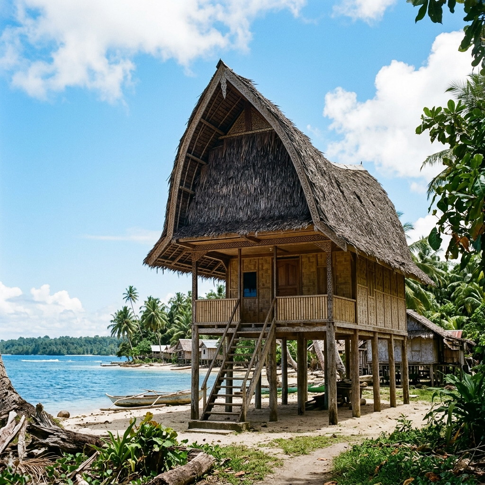
Rumah adat Suku Biak Numfor dengan atap perahu terbalik, berfungsi sebagai tempat pendidikan anak laki-laki usia 6-8 tahun.
Baca Selengkapnya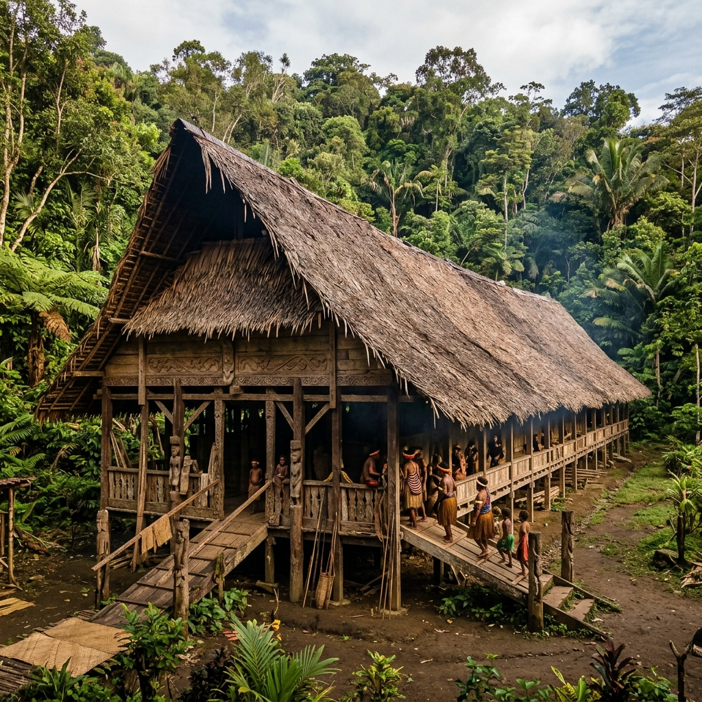
Rumah adat Suku Kamoro dari Papua Tengah, pusat pendidikan anak dan bagian dari upacara inisiasi pendewasaan.
Baca Selengkapnya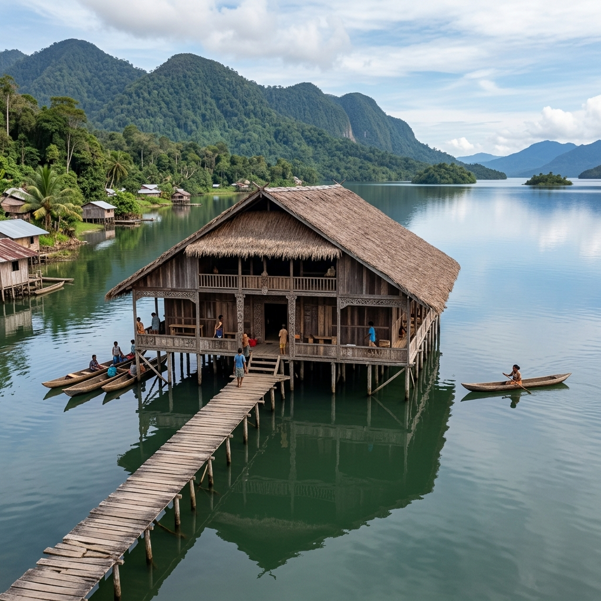
Rumah panggung atas air Suku Sentani, di Danau Sentani. Tak bersekat sebagai cerminan semangat kebersamaan.
Baca Selengkapnya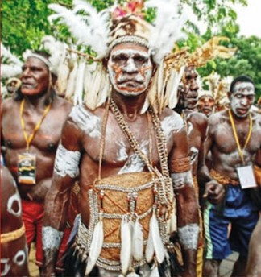
Busana adat dengan hiasan bulu kasuari, taring babi, dan ukiran tubuh — ekspresi identitas Suku Asmat yang penuh makna.
Baca Selengkapnya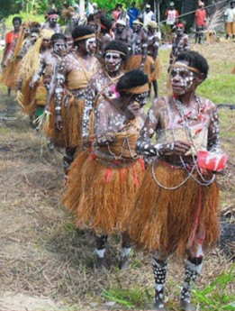
Busana adat dengan hiasan bulu kasuari, taring babi, dan ukiran tubuh — ekspresi identitas Suku Asmat yang penuh makna.
Baca Selengkapnya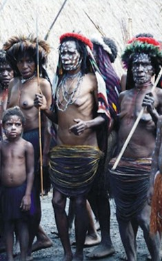
Busana adat dengan hiasan bulu kasuari, taring babi, dan ukiran tubuh — ekspresi identitas Suku Dani yang penuh makna.
Baca Selengkapnya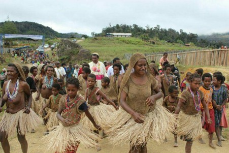
Kain Var dan perhiasan kerang laut — busana khas pelaut ulung Suku Amungme yang mencerminkan kejayaan maritim Papua.
Baca Selengkapnya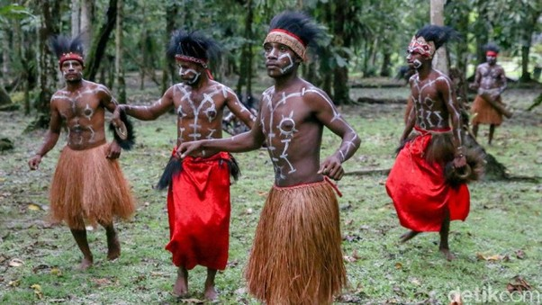
Busana adat dengan hiasan bulu kasuari, taring babi, dan ukiran tubuh — ekspresi identitas Suku Kamoro yang penuh makna.
Baca Selengkapnya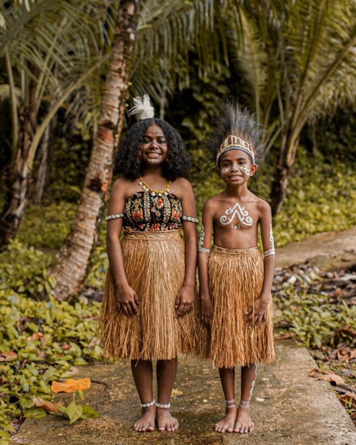
Busana adat dengan hiasan bulu kasuari, taring babi, dan ukiran tubuh — ekspresi identitas Suku Biak yang penuh makna.
Baca Selengkapnya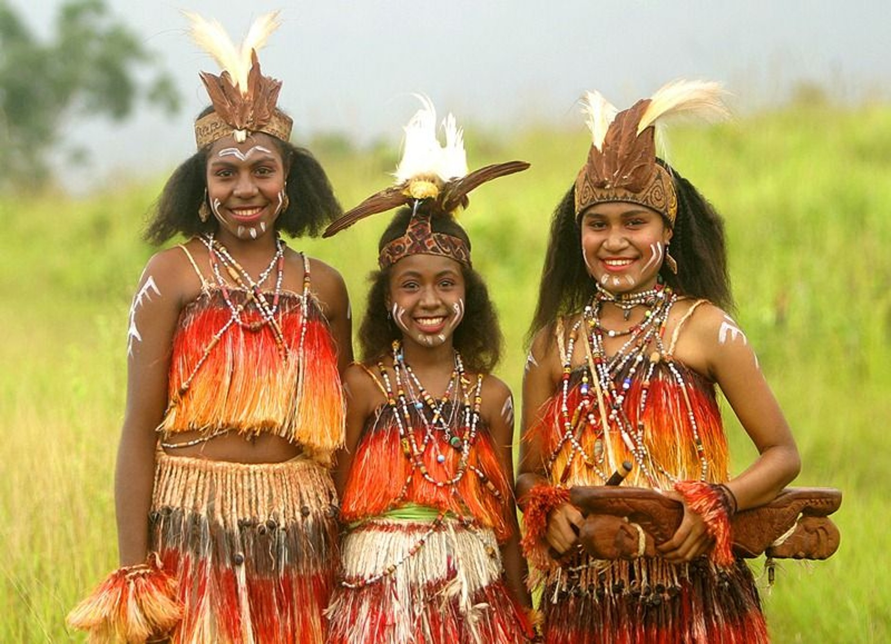
Busana adat dengan hiasan bulu kasuari, taring babi, dan ukiran tubuh — ekspresi identitas Suku Sentani yang penuh makna.
Baca Selengkapnya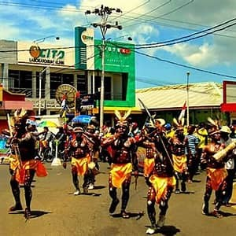
Tarian adat Suku Asmat dari Agats yang sudah ada sebelum kemerdekaan — hentakan kaki, tanah, dan teriakan penuh semangat juang mempertahankan wilayah.
Baca Selengkapnya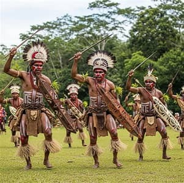
Tari Perang Suku Dani — simbol kesiapan mempertahankan wilayah dengan hentakan kaki kuat, hentak tanah, dan teriakan berapi-api khas pegunungan Papua.
Baca Selengkapnya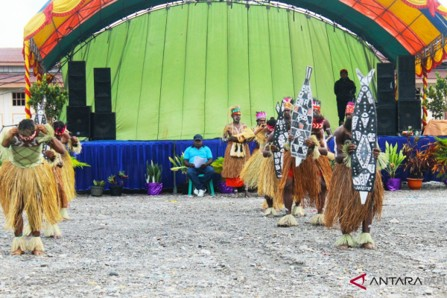
Dua tarian Suku Amungme — Tari Tup (dalam ruang atau lapangan) dan Tari Waisak (lapangan terbuka), dengan properti ikan hitam putih dan rok rumbai.
Baca Selengkapnya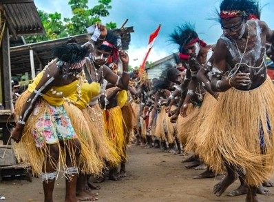
Tarian pergaulan Suku Kamoro — penari pria dan wanita berbaris berhadapan dengan body painting adat, rok rumbai, dan hiasan kepala yang memukau.
Baca Selengkapnya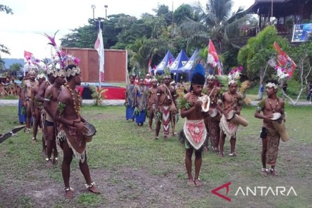
Dua tarian Suku Biak — Tari Wor yang sakral dan Yosim Pancar yang riang, ditampilkan dengan cawat cidako, rumbai, hiasan bulu, dan iringan Tifa.
Baca Selengkapnya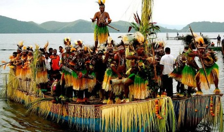
Tarian massal unik Suku Sentani — ditarikan di atas perahu (kaji) berhias janur di Danau Sentani, dengan busur panah dan Tifa sebagai simbol perayaan adat.
Baca SelengkapnyaUntuk menghormati roh leluhur dan meminta perlindungan mereka. Upacara ini diiringi dengan tarian dan nyanyian tradisional serta penyajian makanan dan minuman khas adat.
Untuk mengantarkan roh orang yang meninggal ke alam baka. Upacara ini diiringi dengan ukiran patung Mbis yang melambangkan roh orang yang telah tiada.
Untuk merayakan panen sagu, diiringi dengan tarian dan nyanyian tradisional serta penyajian makanan dan minuman sebagai ungkapan syukur atas hasil bumi.
Untuk menginisiasi anak laki-laki menjadi laki-laki dewasa. Diiringi dengan ritual dan berbagai tes yang wajib dilewati oleh setiap anak laki-laki suku.
Digelar untuk menyambut tamu, merayakan kelahiran, atau memperingati peristiwa penting. Batu dibakar hingga membara lalu diletakkan dalam lubang tanah bersama ubi, daging babi, dan sayuran. Seluruh warga berkumpul menikmati hidangan bersama.
Simbol duka dan bentuk cinta terhadap orang yang meninggal, dilakukan oleh perempuan yang kehilangan anggota keluarga terdekat. Meskipun kini sudah jarang dilakukan, nilainya tetap dihormati sebagai identitas Suku Dani.
Simbol perlindungan dan ekonomi masyarakat Suku Amungme. Dalam kondisi apapun, warga selalu menggunakan noken (tas khas Papua) — hanya dilepas saat tidur. Noken digunakan untuk membawa hasil bumi sehingga dilambangkan sebagai simbol ekonomi dan kehidupan sehari-hari.
Musyawarah adat untuk memilih calon Weyaiku (pemimpin suku). Penilaian mencakup karakter seseorang sejak kecil hingga dewasa, bukan sekadar keputusan sepihak, melainkan hasil pertimbangan menyeluruh seluruh warga suku.
Penobatan pemimpin suku yang memerlukan keladi khusus yang ditanam jauh hari sebelumnya. Upacara dilaksanakan di tempat terbuka dan disaksikan oleh seluruh masyarakat sebagai bentuk pengakuan resmi.
Digelar untuk menghormati roh leluhur, merayakan panen, dan menyambut tamu penting. Selama upacara berlangsung, masyarakat menari, menyanyi, dan memainkan musik bambu khas Biak yang disebut Tifa. Gerakan tari mencerminkan kehidupan laut, keberanian, kegembiraan, dan rasa hormat kepada alam semesta.
Festival pariwisata tahunan yang diisi berbagai kegiatan budaya: tarian adat di atas perahu, tarian perang khas Papua, upacara adat penobatan Ondoafi, serta pameran kuliner khas Papua yang meriah dan berkesan.
Pengantaran harta benda adat sebagai bentuk penghormatan terakhir bagi seseorang yang wafat dan memiliki kedudukan terhormat. Prosesi melibatkan penyerahan harta adat bernilai tinggi seperti kapak batu (tomako batu) dan manik-manik yang dibawa oleh keluarga terdekat.
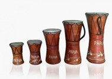
Alat musik pukul ikonik Papua dari kayu dan kulit binatang, digunakan dalam upacara adat dan tarian tradisional.
Baca Selengkapnya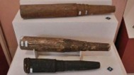
Alat musik tiup sejenis trompet dari kayu putih milik Suku Web di Kabupaten Keerom, biasa mengiringi tarian daerah Papua.
Baca Selengkapnya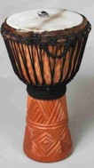
Alat musik tabuh Papua berbentuk bulat panjang, ringan, dan kecil — dimainkan satu tangan menabuh dengan teknik khusus sebagai hiburan rakyat.
Baca Selengkapnya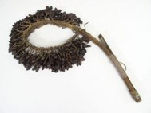
Alat musik rattle dari bambu berisi buah kenari asal Muyu, Merauke — digoyang hingga buah kenari saling bertumbuk menghasilkan irama tarian adat.
Baca Selengkapnya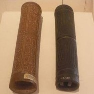
Alat musik tiup dari kayu dan bambu khas Suku Asmat Merauke — berfungsi memanggil penduduk dan mengiringi tarian daerah Papua.
Baca Selengkapnya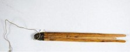
Alat musik dari bambu wulu Suku Dani — dijepit di bibir lalu ditiup sambil menarik tali, menghasilkan nada lembut untuk hiburan.
Baca Selengkapnya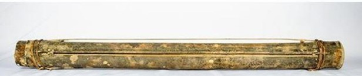
Alat musik pukul Suku Tehit dari Sorong Selatan — dimainkan dengan kayu kecil untuk mengiringi tari-tarian dalam upacara adat.
Baca Selengkapnya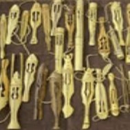
Alat musik Suku Dani dengan suara khas yang sumbang — digunakan untuk menghibur diri dan mengisi waktu luang setelah bekerja seharian.
Baca Selengkapnya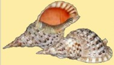
Alat musik tiup dari kerang besar Papua — dahulu sebagai sinyal komunikasi dan panggilan darurat antar warga, kini menjadi hiburan tradisional.
Baca Selengkapnya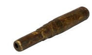
Alat musik dari kayu dan bambu berbentuk gempal coklat gelap — suaranya sangat unik, kini semakin langka dan sulit ditemukan.
Baca Selengkapnya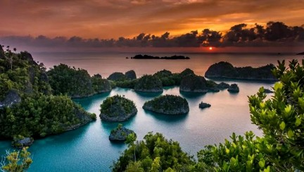
Surga bawah laut Papua dengan 1.511 spesies ikan dan 4 pulau utama — destinasi diving kelas dunia terbaik dikunjungi Oktober–November.
Baca Selengkapnya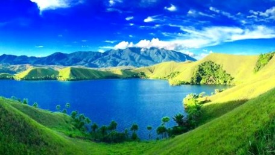
Danau terbesar Papua di ketinggian 75 mdpl, dikelilingi 21 pulau — nikmati berenang, memancing, berperahu, dan kuliner lokal yang khas.
Baca SelengkapnyaPulau di Teluk Cenderawasih dengan Museum PD II, Pantai Bosnik, Air Terjun Wafsarak, Taman Burung, dan kuliner khas Singkong Marapen.
Baca SelengkapnyaTN terbesar di Asia Tenggara & warisan UNESCO — 2,5 juta hektare habitat puyuh salju, kanguru dingiso, dan cendrawasih ekor panjang.
Baca Selengkapnya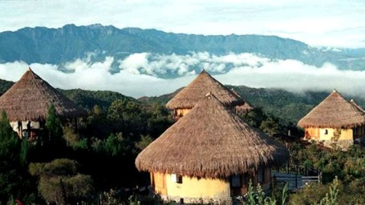
Lembah budaya suku Dani, Yali, Lani di Jayawijaya — setiap Agustus menjadi tuan rumah Festival Lembah Baliem dengan karapan babi dan pesta adat.
Baca SelengkapnyaAir terjun 10 meter di Biak Utara dengan kolam jernih di bawahnya — mudah diakses, aman untuk keluarga dan anak-anak bermain air.
Baca SelengkapnyaKonservasi laut terbesar Indonesia — surga diving dengan penyu, hiu, lumba-lumba, dan Pulau Mioswaar yang punya gua air panas belerang.
Baca Selengkapnya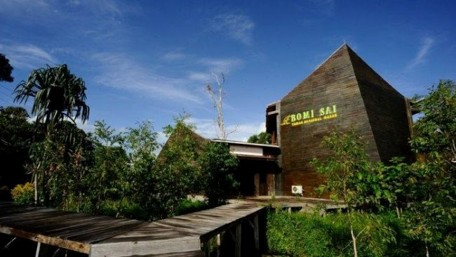
Hutan sabana terbesar Asia di Merauke — habitat 6 ekosistem berbeda dengan fauna migran khas Papua termasuk burung kasuari yang ikonik.
Baca Selengkapnya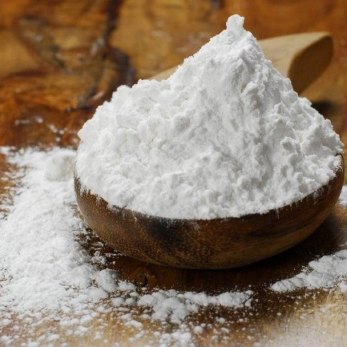
Bahan pangan pokok dari teras batang pohon rumbia — bebas gluten, aman bagi penderita diabetes, dan sumber karbohidrat tahan lama.
Baca Selengkapnya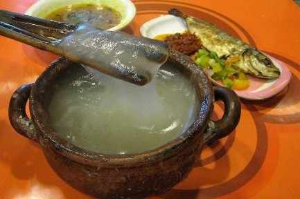
Makanan pokok pesisir Papua dari sagu — tekstur kental bening, disantap unik dengan sumpit bambu yang menggulung sebelum ke piring.
Baca Selengkapnya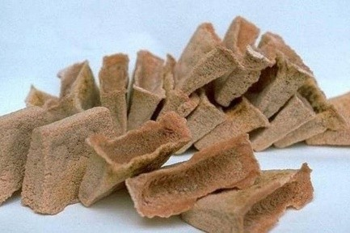
Lempengan sagu cetak berwarna kecokelatan bertekstur keras — paling nikmat dicelup ke teh manis atau kopi panas hingga lunak dan gurih.
Baca Selengkapnya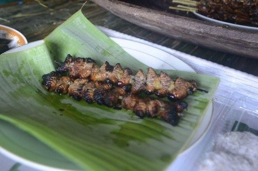
Hidangan sate dari larva batang pohon sagu tua — kaya protein, bertekstur creamy dan kenyal, kuliner eksoktis favorit warga lokal Papua.
Baca Selengkapnya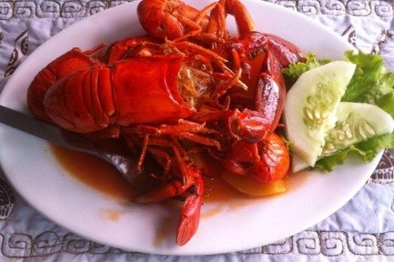
Udang bercapit besar dari Sungai Baliem — dagingnya padat, lembut, dan manis, disajikan dengan saus pedas atau asam manis yang segar.
Baca Selengkapnya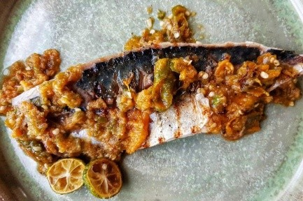
Ikan tongkol segar dibakar dengan bumbu rempah khas, disiram sambal tumbuk pedas segar yang dipadu perasan jeruk nipis.
Baca Selengkapnya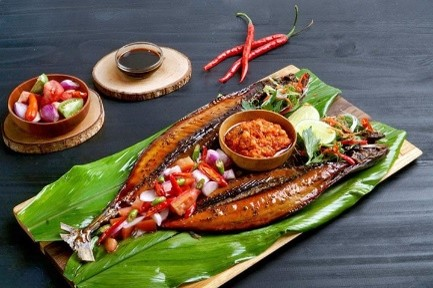
Ikan dibungkus daun talas dengan bumbu kuning yang meresap hingga tulang — aroma daun talas memberi cita rasa autentik yang menggugah selera.
Baca Selengkapnya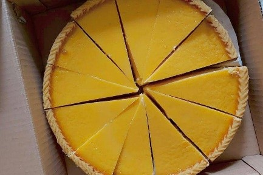
Kue warisan Belanda (ronde taart) — pinggiran renyah dengan bagian tengah super lembut yang langsung meleleh di mulut.
Baca SelengkapnyaCamilan renyah dari irisan tipis umbi keladi khas pesisir Papua — hadir dalam aneka varian bumbu pedas manis, balado, hingga sapi panggang.
Baca Selengkapnya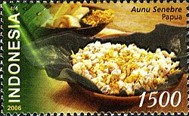
Perpaduan ikan teri nasi dan irisan daun talas dalam satu bumbu — tekstur kering dengan cita rasa yang sangat gurih khas Papua.
Baca Selengkapnya